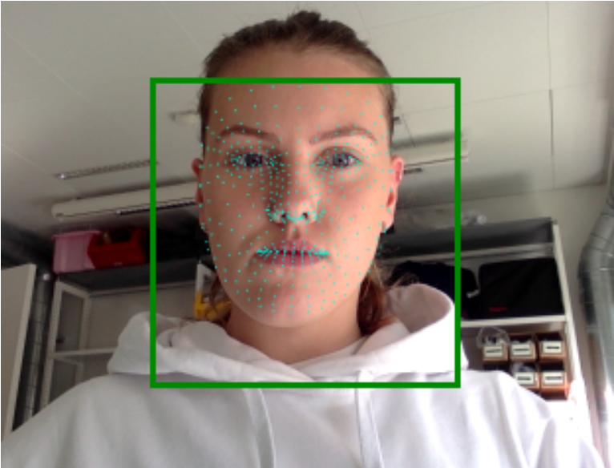

My bachelor-project

My project:
EYETRACKING AS A METHOD FOR EVALUATING PERSONAL WEBBASED PORTFOLIOS
Choosing my topic, I was inspired by eyetracking softwares that allows people with no language and little or no motor skills to communicate using their eyes to control an interface. The so-called command and control. Connecting eyetracking software with UX/UI-design, I thought it would be interesting to use this form of input as e way of evaluating an interface. More spefically, I used this evaluationmethod on my own portfolio (yes, this one) to make conclusions as to how first-time visiters reacted to the frontpage and what drove their actions after being presented with the interface.
The basis assumptions and explorations
“Indeed, it is by moving our eyes (and our head), that the image of the objects which interest us is placed at the level of the fovea and that we can perceive our environment in all its complexity and color” (Pouget 2019, 4).My research question became something like this: which informations about the user does eyetracking prevail in an evaluation of a personal webbased portfolio and how can these informations contribute in an improvement of the visual communication through a re-design? Although research have been made upon eyetracking as an evaluationmethod, there's no cases of this method being used in relation with personal portfolios, which is becoming more common to use and distribute to possible employers, although little or no guides for the design and content of a portfolio has been made. The project was made based on the assumption that your gaze relates to our immediate interests and other specific human cognitive interests (see Rayner 1998, 2009).
Technology
To make an evaluation using eyetracking, eyetracking technology is necessary. After exploring different possible solutions, I choose to use and integrate a JavaScript library called WebGazer.js into the original code of my portfolio. This library makes it possible to track the point of gaze using the build in webcam. Knowing and having written in JavaScript before, alongside the guide from the WebGazer.js-website I was able to implement the library and run the code in a browser, collecting and saving the x- and y-coordinates that is the point of gaze.It is also important, when using eyetracking, to make and conduct a calibration. This secures and improve the data collection and minimize the noise.
Theory and methods
Before planning and conducting the evaluation, I dug into theory concerning the visual communication of a website. Lisbeth Thorlacius developed a model for understanding communication between addresser and addressee on the context of a webpage.Using literature and former experience of evaluations i started planning the evaluation of the portfolio. I underwent four points in the process of planning and conducting the evaluation: 1) pre-test planning, 2) preparation, 3) execution, and 4) data analysis. In the analysis of the collected eyetracking data, important measures were fixations, alongside determining the precision and possible noise in the data collection.
After conducting the evaluation and analysing the data, I created heatmaps that visualize and easilier communicate areas of interests based on fixations.
Results and re-design
Following insights were highlighted after conducting the evaluation and analysing important aspects:- Participants especially fixate text, mostly the biggest and bold text
- Heatmaps shows clear signs of noise (unprecise data collection)
- Participant often fixate in the center of the interface, even though there are no elements of immediate interest placed at this location
- The upper part of the webpage is fixated, also despite the lack of elements at this location
- The picture is not fixated and can therefore not be defined as an AOI
- All participants understood the purpose of the webpage (they weren't told beforehand)
- All participants had detected the picture (eyetracking data showed otherwise)
- Especially one participants data collection was noisy because of natural light that were reflected into the webcamera
- Participants wearing glasses was not distracting the data collection
Lastly, a re-design of the portfolio was made and presented, based on the insights from the evaluation. Furthermor, it was concluded that eyetracking as evaluationmethod is a useful tool for designers who wants to gain insight into what users expect and focus on on their website. Elements like text and menues, and the placement of these, are generally aspects to consider for optimalised communication, use and user experience. WebGazer.js is a adequate tool for this purpose, though designers should be attentive to certain aspects of data collection - noisy and unprecise measurements, how they might accure and of course taking this into account in the data analysis. It is also relevant to consider the time horizont for the evaluation, as eyetracking evaluation can be more time consuming than other forms of evaluation. Also, deploying eyetracking technology it is important (as in any case) to be ethical and attentive to the privacy of the user.
Abstract
To gain an overview of the paper, you can read the abstract:This paper examines eyetracking as a method for doing evaluations on interfaces – more specific web design. This will be done by carrying out an evaluation with users of a web based personal portfolio with the software WebGazer.js, that measures the point of gaze (POG) through the web-camera. The findings of the evaluation showed following insights, that direct the re-design of the landing page of the portfolio: 1) users tend to fixate on text, mostly bold and larger, 2) users expect informative elements in the top and center of the screen. The re-design will focus on improving the aesthetic functions, in accordance with the model of visual communication in web design. The discussion will touch upon some of the uncertainties with the software and the influences of the context of the evaluation. Furthermore, it suggests methodological triangulation for a better understanding of the data. Lastly, it concludes that eyetracking as evaluation method is appropriate and useful for designers, who doesn’t have a lot of programming knowledge, yet with some attention to certain factors.